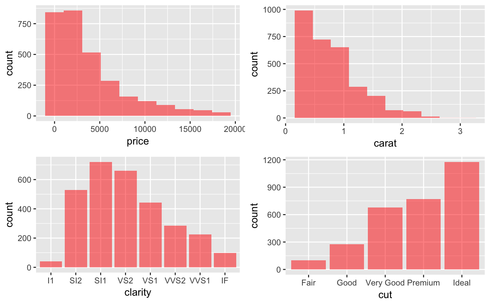
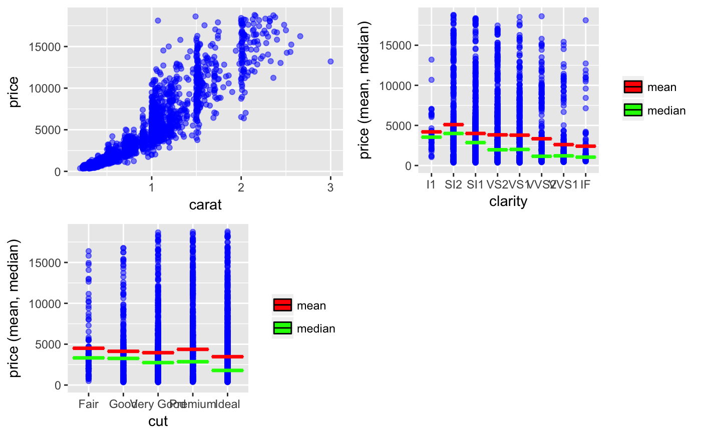
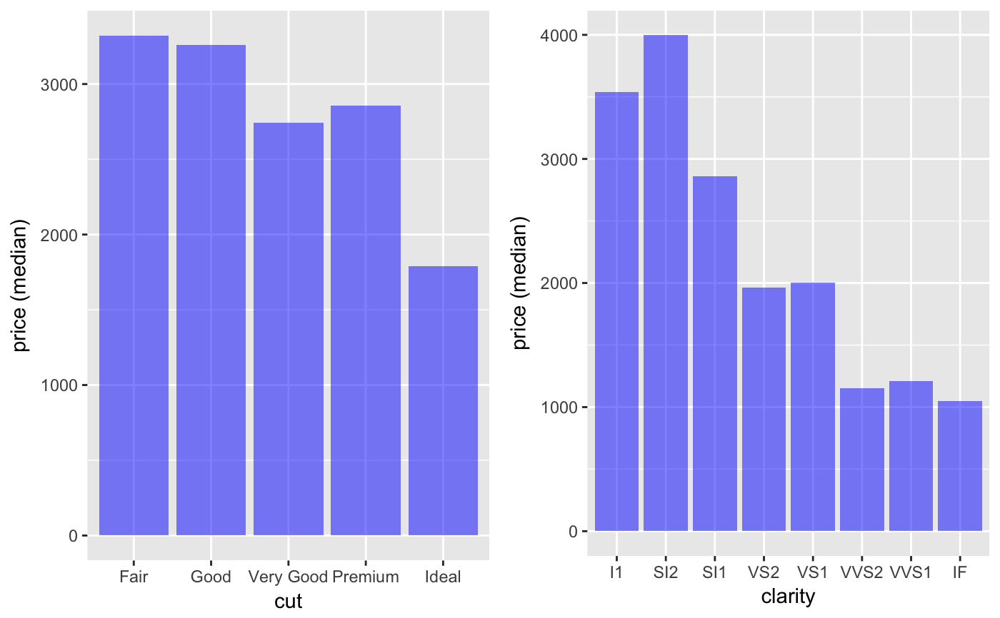
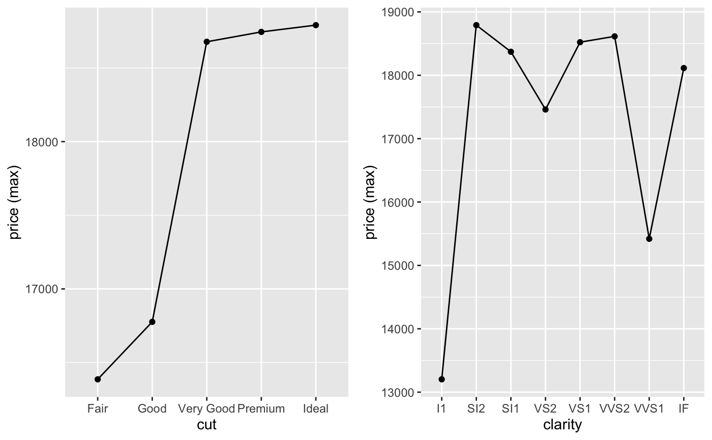
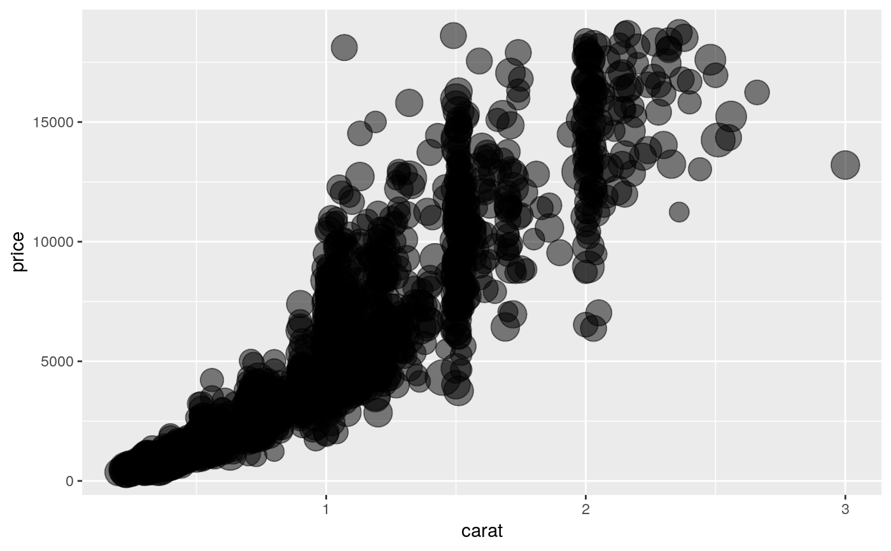
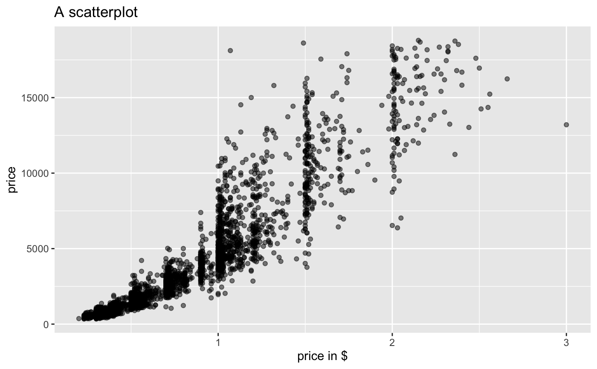
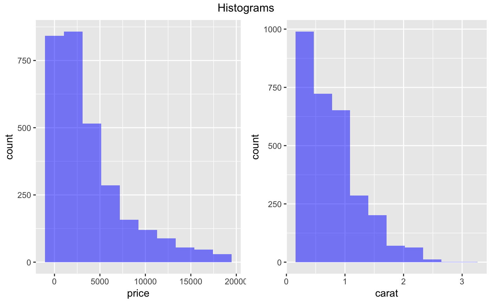
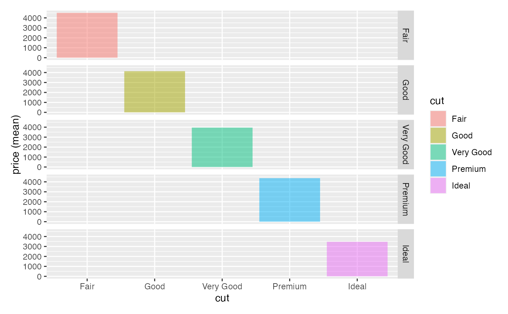

Visualize data using ggplot2 http://ggplot2.tidyverse.org
visualize(dataset, xvar, yvar = "", comby = FALSE, combx = FALSE, type = ifelse(is_empty(yvar), "dist", "scatter"), nrobs = -1, facet_row = ".", facet_col = ".", color = "none", fill = "none", size = "none", fillcol = "blue", linecol = "black", pointcol = "black", bins = 10, smooth = 1, fun = "mean", check = "", axes = "", alpha = 0.5, xlim = NULL, ylim = NULL, data_filter = "", shiny = FALSE, custom = FALSE)
| dataset | Data to plot (data.frame or tibble) |
|---|---|
| xvar | One or more variables to display along the X-axis of the plot |
| yvar | Variable to display along the Y-axis of the plot (default = "none") |
| comby | Combine yvars in plot (TRUE or FALSE, FALSE is the default) |
| combx | Combine xvars in plot (TRUE or FALSE, FALSE is the default) |
| type | Type of plot to create. One of Distribution ('dist'), Density ('density'), Scatter ('scatter'), Surface ('surface'), Line ('line'), Bar ('bar'), or Box-plot ('box') |
| nrobs | Number of data points to show in scatter plots (-1 for all) |
| facet_row | Create vertically arranged subplots for each level of the selected factor variable |
| facet_col | Create horizontally arranged subplots for each level of the selected factor variable |
| color | Adds color to a scatter plot to generate a 'heat map'. For a line plot one line is created for each group and each is assigned a different color |
| fill | Display bar, distribution, and density plots by group, each with a different color. Also applied to surface plots to generate a 'heat map' |
| size | Numeric variable used to scale the size of scatter-plot points |
| fillcol | Color used for bars, boxes, etc. when no color or fill variable is specified |
| linecol | Color for lines when no color variable is specified |
| pointcol | Color for points when no color variable is specified |
| bins | Number of bins used for a histogram (1 - 50) |
| smooth | Adjust the flexibility of the loess line for scatter plots |
| fun | Set the summary measure for line and bar plots when the X-variable is a factor (default is "mean"). Also used to plot an error bar in a scatter plot when the X-variable is a factor. Options are "mean" and/or "median" |
| check | Add a regression line ("line"), a loess line ("loess"), or jitter ("jitter") to a scatter plot |
| axes | Flip the axes in a plot ("flip") or apply a log transformation (base e) to the y-axis ("log_y") or the x-axis ("log_x") |
| alpha | Opacity for plot elements (0 to 1) |
| xlim | Set limit for y-axis (e.g., c(0, 1)) |
| ylim | Set limit for y-axis (e.g., c(0, 1)) |
| data_filter | Expression used to filter the dataset. This should be a string (e.g., "price > 10000") |
| shiny | Logical (TRUE, FALSE) to indicate if the function call originate inside a shiny app |
| custom | Logical (TRUE, FALSE) to indicate if ggplot object (or list of ggplot objects) should be returned. This option can be used to customize plots (e.g., add a title, change x and y labels, etc.). See examples and http://docs.ggplot2.org/ for options. |
Generated plots
See https://radiant-rstats.github.io/docs/data/visualize.html for an example in Radiant
visualize(diamonds, "price:cut", type = "dist", fillcol = "red")visualize(diamonds, "carat:cut", yvar = "price", type = "scatter", pointcol = "blue", fun = c("mean", "median"), linecol = c("red","green"))visualize(diamonds, yvar = "price", xvar = c("cut","clarity"), type = "bar", fun = "median")visualize(diamonds, yvar = "price", xvar = c("cut","clarity"), type = "line", fun = "max")visualize(diamonds, yvar = "price", xvar = "carat", type = "scatter", size = "table", custom = TRUE) + scale_size(range=c(1,10), guide = "none")visualize(diamonds, yvar = "price", xvar = "carat", type = "scatter", custom = TRUE) + labs(title = "A scatterplot", x = "price in $")visualize(diamonds, xvar = "price:carat", custom = TRUE) %>% gridExtra::grid.arrange(grobs = ., top = "Histograms", ncol = 2)visualize(diamonds, xvar = "cut", yvar = "price", type = "bar", facet_row = "cut", fill = "cut")